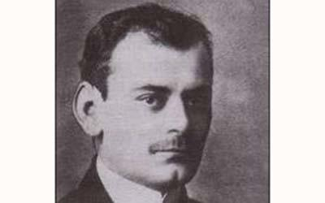

Sima Pandurović (1893 – 1960) poznati je srpski pesnik. Službeničku karijeru otpočeo je kao profesor u valjevskoj gimnaziji, a u Srpskoj kraljevsjkoj četvrtoj gimnaziji radio je od 1910. do 1913. godine.
Upravo u to vreme doživeo je najveću slavu kao mladi i talentovani pesnik (sa zbirkom Posmrtne počasti), ali i ubitačnu kritiku Jovana Skerlića, koji ga je zajedno sa Disom oglasio za rodonačelnika „bolesnog pesimizma“ u srpskoj poeziji.
Za vreme Prvog svetskog rata Austrijanci su ga internirali u logore u Boldogasonju i Nežideru.
